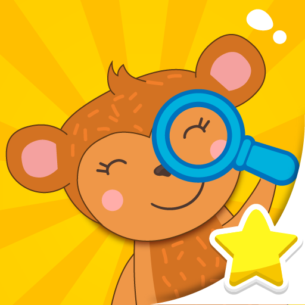
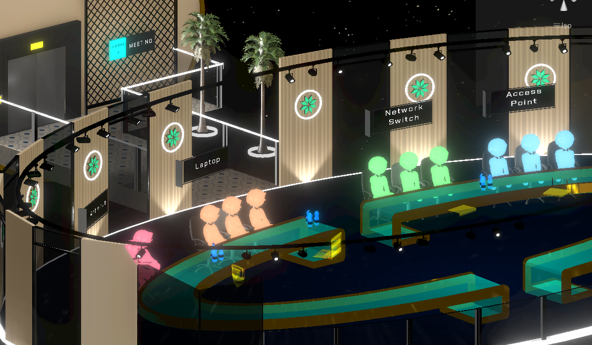

01 / VR · Unity · Research
MediSim
An interactive ECG simulation exploring how virtual reality can support medical learning.
View project ↗THE PROJECT COLLECTION
A selection of personal projects, prototypes and game jam work.
An interactive ECG simulation exploring how virtual reality can support medical learning.
View project ↗
Explore the cyber security game featured in my portfolio.
View project ↗
A colourful puzzle game built around focus, attention and observation.
Google Play ↗
Flappy Bird-inspired mechanics meet a risk-and-reward arcade loop.
View project ↗

A physics-based game about turning a boring day at the desk into play.
Watch gameplay ↗Find the Differences for Kids is a fun and educational puzzle game designed to help children improve their focus, attention, and observation skills. With bright images, simple mechanics, and child-friendly content, this game offers a relaxing and engaging experience for players of all age
Embark on a hilarious journey through a twisted realm of Rock-N-Roll with a 50's vibe and get ready to laugh out loud! Our game is a parody, which challenges the conventional set-up and the seriousness of classic platformers (Yeah, we said it!) by injecting a nice dose of humour.
Bored Peter throws the crumpled paper in his hand into the trash. Then he tries to throw away the ornaments on the shelves with the papers on his desk. He created a game for himself out of boredom.
Maybe it's a dream he had while taking a nap at his desk. Will the boss come soon?
Lucy Spin is a hyper-casual arcade game where players control Lucy to avoid obstacles and collect target objects in each level to earn rewards. The game’s difficulty increases as players take more risks for higher rewards, with additional challenges like slot machines for bonus prize
© 2024. All rights reserved.
Paper Basket Game report ↗